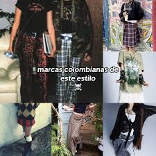

LOS DIFERENTES ESTILOS EMERGENTES EN BARRANQUILLA

En Barranquilla, la moda es una mezcla vibrante de clima caribeño, cultura urbana y
tradición carnavalera. Estos son los estilos de ropa emergentes y populares en la ciudad:
Características:
- Camisas de franela (abiertas sobre tops ligeros)
- Jeans rotos o desgastados
- Faldas con medias de malla
- Botas negras o tenis Converse
- Colores oscuros: negro, gris, rojo vino